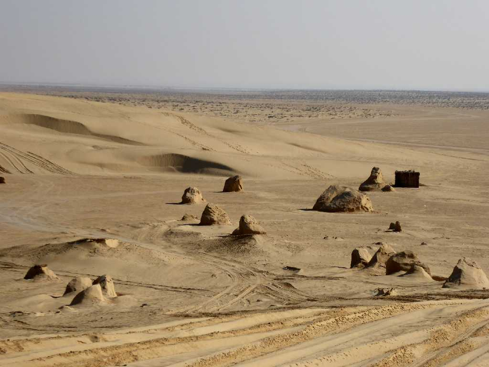
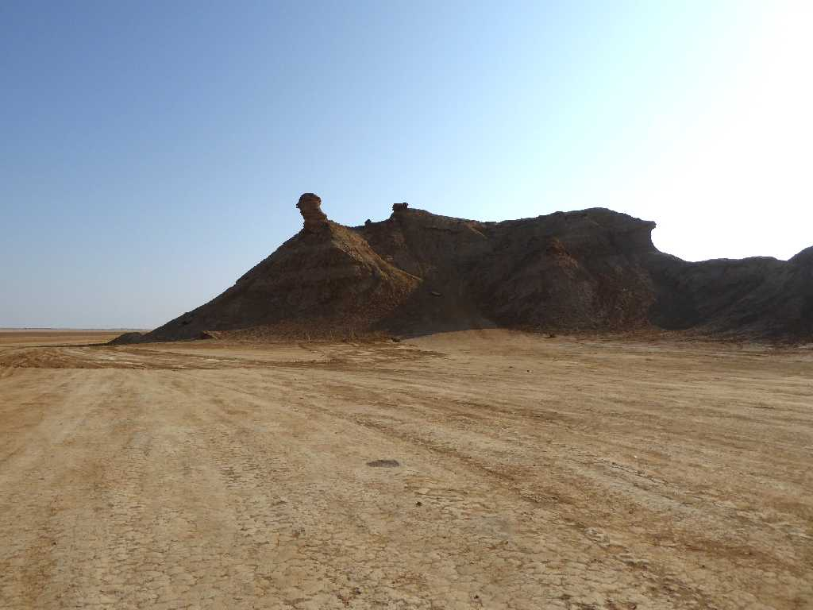
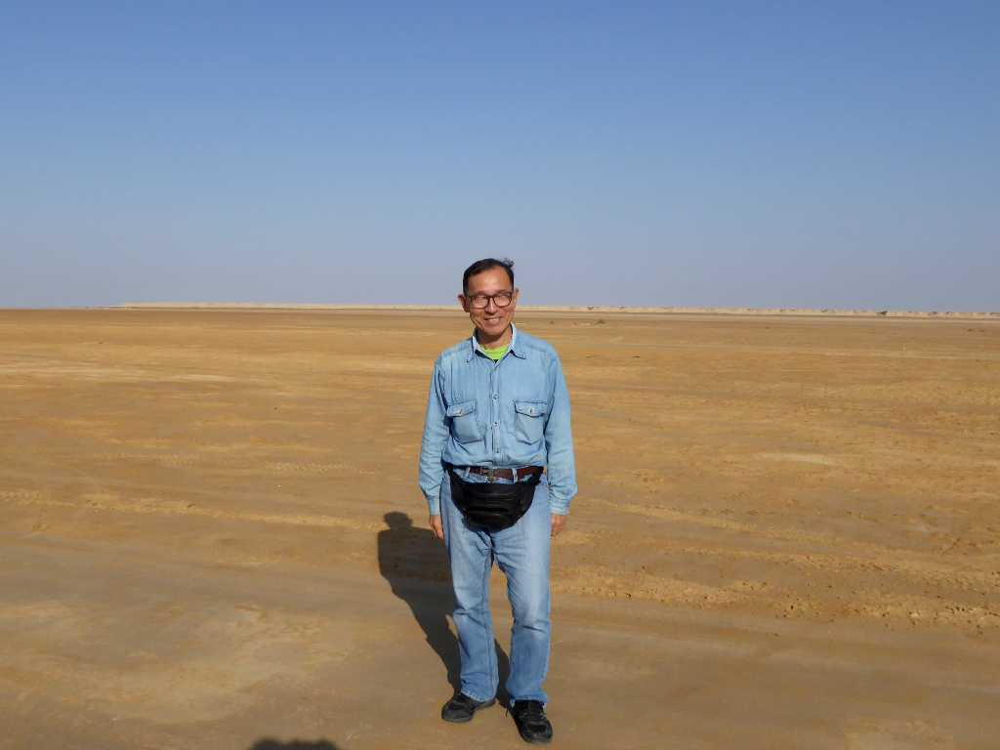

Ong El Jemel Sahara Desert
北サハラ砂漠の中に岩の頭が突き出ている景観のオングエルジュメル
Mos Espa Sahara Desert
１９９７年に２０個の建物が創られたスターウォーズの聖地宇宙港都市モスエスパのロケ地

Camel Neck Rock Ong El Jemel Sahara Desert
トズール西のオングエルジュメルにあるラクダ岩

November 18 2018 Chott el Gharsa Ong El Jemel
海抜１７ｍの塩湖ガルサ湖